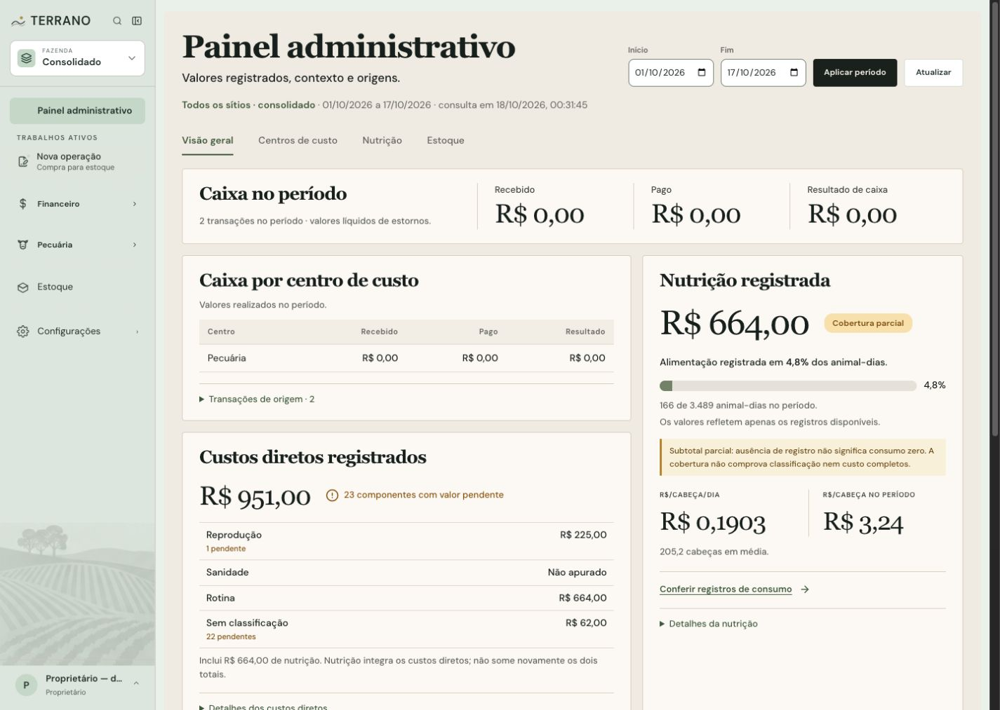
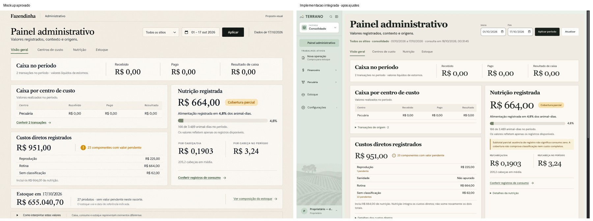
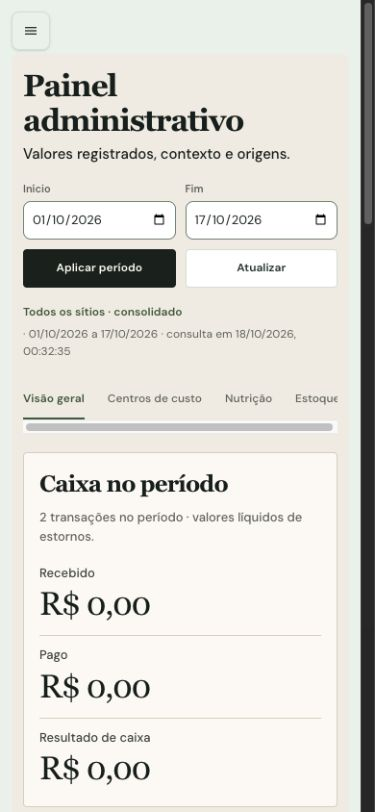
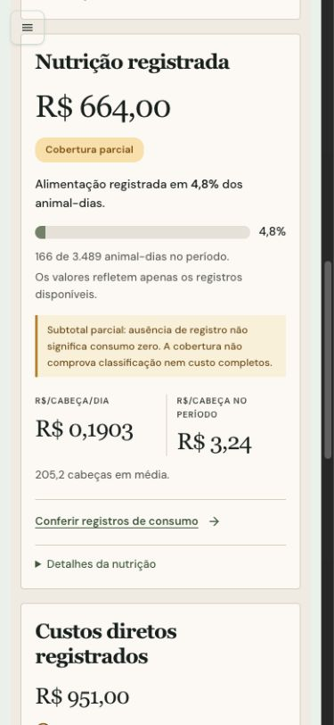
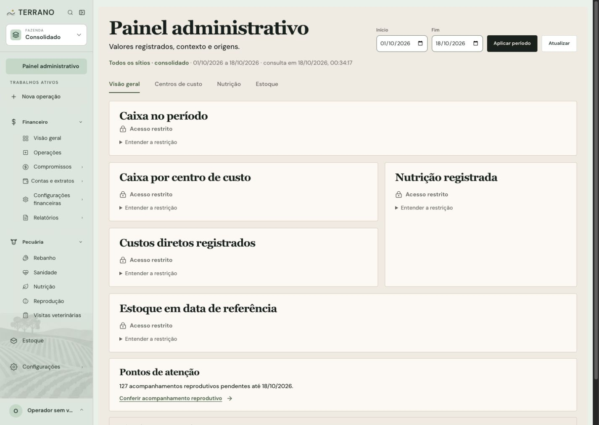

1. Contexto
Selecionar o sítio no menu global e informar o período. Aplicar consulta os registros existentes.
Resumo de caixa compacto, centros de custo visíveis, cobertura junto dos indicadores nutricionais e estoque com sua própria data. A entrega reúne a página administrativa, sua API de consulta e cálculos de apresentação sobre os registros existentes.
Interface de consulta API somente leitura · sem alteração de schemaA página continua em /gerencial, com o título “Painel administrativo” no conteúdo e no menu. A marca, a navegação e a seleção de sítio usam a estrutura atual do aplicativo.
| Parte da página | Implementação desta etapa | Como interpretar |
|---|---|---|
| Contexto e filtros | Cabeçalho compacto com sítio/consolidado, início/fim, aplicar período, atualizar e instante da consulta. Atalhos para as seções. | Datas vêm da resposta real. Período e sítio continuam na URL, com voltar/avançar. |
| Caixa no período | Recebido, pago e resultado numa faixa de resumo. Contagem por transação distinta. | Resultado zero não significa ausência de transações. Resultado de caixa não é lucro. |
| Centros de custo | Tabela aberta com centro, recebido, pago e resultado, valores alinhados e acesso às transações de origem. | Centros do caixa e finalidades dos custos diretos são dimensões distintas. |
| Nutrição | Custo conhecido, cobertura de alimentação com percentual e contagem junto do valor, sinalização de parcial, índices por cabeça e média populacional com uma casa. | 166/3.489 animal-dias aparece como 4,8% na amostra consultada. Não é percentual monetário conhecido. Valores diários mantêm quatro casas. |
| Custos diretos | Total conhecido, pendências e todas as finalidades retornadas, incluindo Sanidade quando não apurada. Detalhes agrupados. | Nutrição já integra esse total. Desconhecido permanece diferente de zero comprovado. |
| Estoque | Valor conhecido, data própria, grupos pendentes e contagem de produtos distintos, com composição acessível. | A amostra consolidada contém 13 produtos em 27 grupos; grupos/lotes não são produtos distintos. |
| Detalhes preservados | Vacas, cobertura de classificação/custos, origens, lacunas, mensal com gráfico e tabela, componentes, limites e acompanhamentos permanecem acessíveis. | Expansões reduzem a densidade inicial sem apagar os detalhes da consulta. |
| Estados e acesso | Carregamento, falha, tentar novamente, acesso restrito e ausência de dados. Motivo da restrição pode ser aberto. | A página não apresenta valores ou origens de blocos restritos nem converte erros em zero. |
Selecionar o sítio no menu global e informar o período. Aplicar consulta os registros existentes.
Comparar o caixa por centro e interpretar nutrição e custos com cobertura, pendências e datas visíveis.
Abrir os detalhes ou acessar as páginas operacionais de origem. A navegação conserva o contexto da consulta.
O período de caixa/nutrição e a data do estoque têm significados próprios. Seus valores não devem ser somados como um único total. Explicações extensas ficam em “Como interpretar estes valores” e nos detalhes de cada bloco.
A entrega inclui GET /api/gerencial/resumo, o contrato GERENCIAL_V1 e serviços próprios de leitura. A consulta aplica as permissões existentes e usa uma transação READ ONLY. Não altera regras financeiras, serviços operacionais de gravação, tabelas ou migrations.
Recebimentos, pagamentos, rateios e centros já consultados pelo painel.
Fechamentos, presença histórica, atribuições e finalidades existentes, com os mesmos limites de apuração.
Saldos e valores registrados no corte próprio, preservando os métodos de valorização existentes.
Não há alteração de tabelas; portanto não há novo diagrama de banco a apresentar. A autenticação usa o fluxo atual de sessão.
Capturas novas da aplicação autenticada, com API real e banco local fazendinha_seedatev3, em 18/10/2026. O período do exemplo autorizado é de 01 a 17/10/2026; o estoque conserva o corte de 18/10/2026.





| Verificação | Resultado desta execução |
|---|---|
| Escopo | Página, navegação, API e serviços gerenciais de leitura, testes e documentação próprios. Schema, migrations e serviços operacionais de gravação preservados. |
| Build e tipos | Após integração à main atual: build do cliente (TypeScript + Vite) e do servidor (TypeScript) concluídos. O Vite informou o aviso de chunk acima de 500 kB. |
| Testes | Após integração à main atual: 89 testes do cliente em 8 arquivos e 16 testes focados do backend em 4 arquivos passaram, sem integração com escritas. Incluem seleção de sítio pelo menu, histórico, carga direta e link de origem. Na validação anterior do mockup, os 8 testes do painel passaram. Execução ampla anterior: 1.263 passaram e 32 falharam em 13 arquivos (179 arquivos / 1.295 testes), majoritariamente por timeout. Rechecagem das 13 suítes que falharam, mais painel e navegação, com um único worker: 18 arquivos e 324 testes passaram, sem alterar testes desses módulos nem limites de tempo. A execução ampla inicial não ficou verde; a rechecagem serial passou. |
| Navegador integrado | Login local autorizado e de operador, seleção do sítio Destino, aplicação de período pelo teclado, URL, voltar/avançar, retorno da página nutricional, detalhes de vacas e expansão por Enter conferidos. |
| Responsividade | Desktop 1440 × 1024 e celular 390 × 844 inspecionados. Sem transbordamento horizontal da página no recorte móvel; tabelas possuem rolagem própria. Não houve erro ou aviso nos logs do navegador consultados ao final desse percurso. |
| Revisão independente | Revisão de padrões e aderência ao plano não apontou problema novo de produção P1/P2. Identificou assertion ineficaz no teste de resposta antiga; foi corrigida e a correção foi reconferida pelo revisor. |
Entrega preparada em branch própria para revisão no PR do painel administrativo. Não houve deploy.